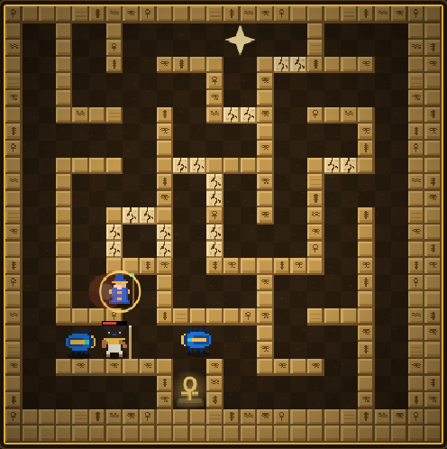
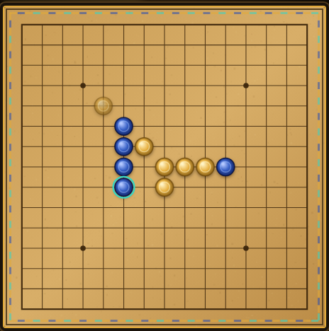

埃及風的小遊戲 打開網頁就能玩，不用安裝
這裡是四月老師做的原創小遊戲。每個遊戲都附有完整的說明：故事、操作、玩法和小技巧，先看說明再玩，更容易上手。

在隨機生成的墓穴迷宮裡，用魔法彈擊退四種怪物，守住最深處的安卡聖符。共 8 關。
看說明並開始 →
經典五子連珠。對電腦有三種難度，也能雙人同機輪流下。
看說明並開始 →遊戲的畫面、音樂和音效，都是在遊戲裡即時繪製、合成的，沒有使用別人的素材。電腦和手機的瀏覽器都能玩，戰績和設定只存在你自己的裝置裡。